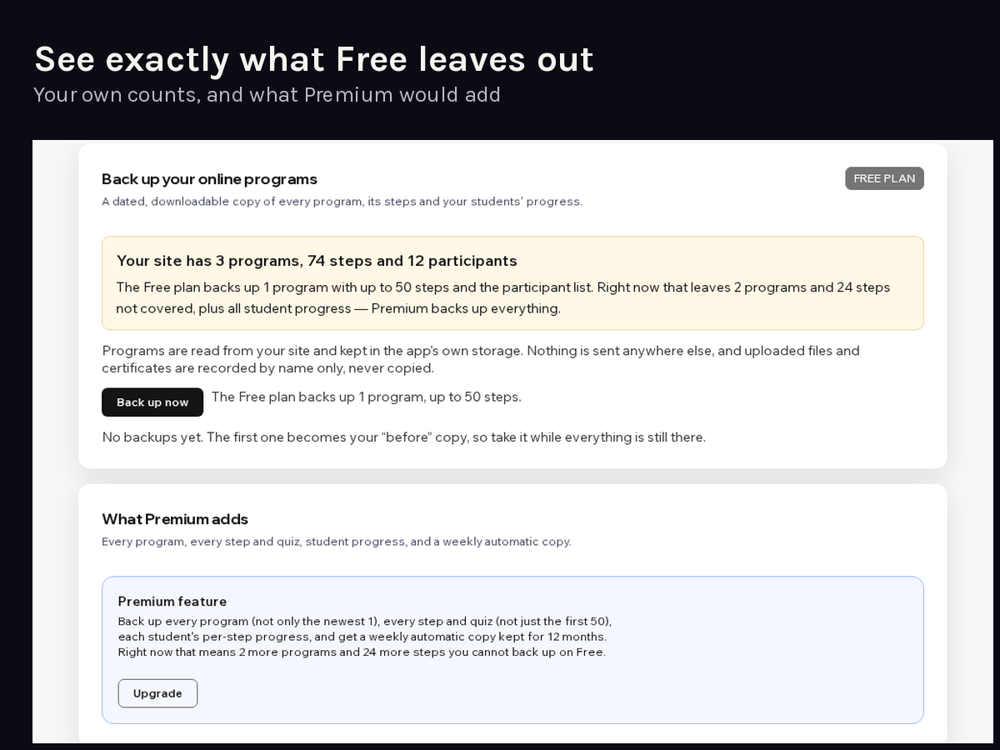

Course Backup: Course Export
Back up every course, step and student progress
- Every program, section and step in one copy
- Each student's per-step progress, on Premium
- See what changed since your last copy
- Free backs up one program, up to 50 steps

What it does
Your course is the most valuable thing on your site, yet the Online Programs dashboard exports only the participant list: the program, its sections, the text of every step and each student's progress have no export at all.
This app reads your programs, sections, steps and participants through your site's own services and keeps a dated copy in the app's own storage, inside your site. Each copy holds the course text itself, not links: every program and section title, every step with its type and order, and the participant list. Uploaded files and certificates are recorded by name only.
Each copy is compared with the one before it, so the history lists new, missing and changed rows at a glance, and any kept copy downloads as CSV files with a manifest.
Free backs up one program with up to 50 steps and the participant list, and keeps the 2 most recent copies. Premium backs up every program, step and quiz, each student's per-step progress, keeps 12 months of history and takes a weekly automatic copy on the first visit after seven days. Premium is $5 a month, or $4 a month billed yearly ($48 a year).
Price
Free
Premium
$5/month, or $4/month billed yearly ($48/year)
- Every program, every step and quiz
- Each student's per-step progress
- 12 months of backup history
- A weekly automatic copy